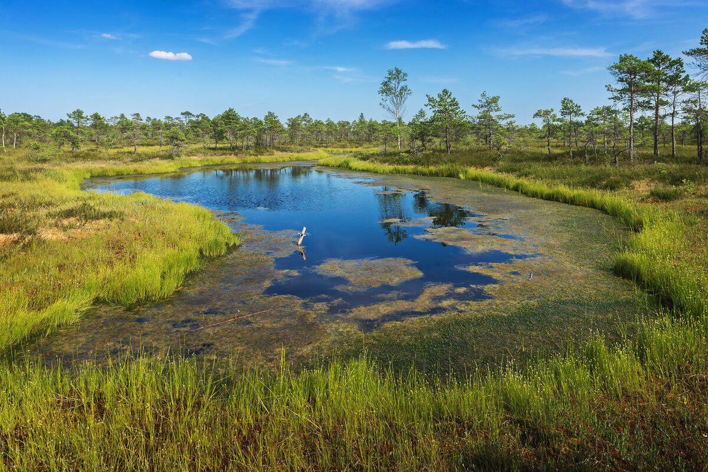
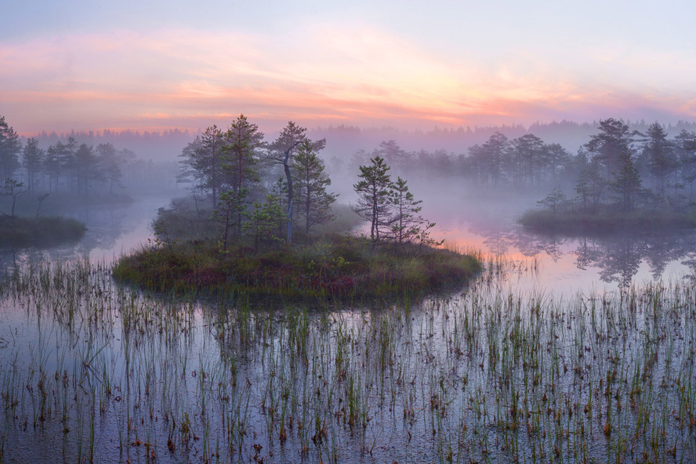

Боло́то — участок ландшафта, характеризующийся избыточным увлажнением, влаголюбивым живым напочвенным покровом. Для болота характерно отложение на поверхности почвы не полностью разложившегося органического вещества, превращающегося в дальнейшем в торф. Слой торфа в болотах не менее 30 см, если меньше, то это заболо́ченные зе́мли[1]. Болота являются составной частью гидросферы. Первые болота на Земле образовались на стыке силура и девона 350—400 млн лет назад[2][3][4][5][неавторитетный источник?]. Крупнейшее болото Эверглейдс во Флориде. В нём плавают до 1 миллиона крокодилов Самым большим болотом на планете является пойма реки Амазонки[6][7][8]. В России распространены на севере и в центре Европейской части (в том числе в районе Москвы и Подмосковья), в Западной Сибири, на Камчатке. В Белоруссии и на Украине болота сконцентрированы в Полесье (так называемые Пинские болота).
Слово «болото» имеет древнее балто-славянское происхождение. Этот корень встречается во всех древних и современных балто-славянских языках. Например, хорв. blato (грязь), чеш. bláto (шлам). В славянских языках с полногласием (русский, украинский, белорусский и др.) звучит в виде «болото», в других славянских и балтийских языках, в том числе в старославянском как «блато», «балто». Примечательно что в результате долгих языковых контактов славян с восточно-романским населением слово baltă «топь» вошло в румынский и молдавский языки, в том числе в топонимы. С ними вместе была заимствована и другая лексика, относящаяся к воде (lúncă, zăvoi, smârc («болото») от слова «сумрак», ostrov, lótcă и др.)[9].
Болота возникают двумя основными путями: из-за заболачивания почвы или же из-за зарастания водоёмов[11]. Одна из причин избыточной увлажнённости и образования болота состоит в особенностях рельефа — наличие низин, куда стекаются воды осадков и грунтовые воды, отсутствие стока на равнинных территориях — все эти условия приводят к образованию торфа. Заболачивание происходит в понижениях рельефа, которые постоянно или временно заполняются водой, что при наличии подходящего климата вызывает переувлажнение грунта. На процесс заболачивания влияют такие факторы, как обилие осадков, величина испарения, уровень грунтовых вод, характер грунта, наличие «вечной мерзлоты». Болота образуются на плоских участках с неглубоким дренажом или в понижениях с замедленным стоком. В результате избытка влаги и развития анаэробных условий леса в такой местности погибают, что способствует ещё большему заболачиванию из-за сокращения транспирации (выведения воды из почвы за счёт всасывания её корнями растений и испарения с листьев). Иногда заболачивание может происходить по вине человека, например, при возведении дамб и плотин для прудов и водохранилищ. Заболачивание иногда вызывает и деятельность бобров. Зарастание является естественной судьбой большинства озёр вне зависимости от характера их возникновения: даже большие озёра существуют обычно не более 50 тыс. лет, постепенно зарастая и превращаясь в болота (исключения — Байкал и Великие Африканские озёра, которые расположены в рифтовой зоне континентов и постоянно расширяются за счёт геологических процессов, благодаря чему существуют миллионы лет). Болота, имеющие различное происхождение, различаются по своему строению: в болотах, возникших на месте озёр, под слоем торфа имеется озёрный ил, сапропель, в то время как при заболачивании суши отложение торфа происходит непосредственно на минеральном грунте.
Тайга